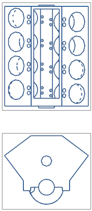
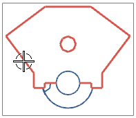

In the two lightweight views, the objects you see are faceted representations.

LIGHTWEIGHT
Position your cursor over the an edge inside one the lightweight views to identify its object type.

Faceted Representation
With Faceted Representations, you are limited to the types of annotations that you can apply to the view. In order to dimension the view, you must load the model geometry.